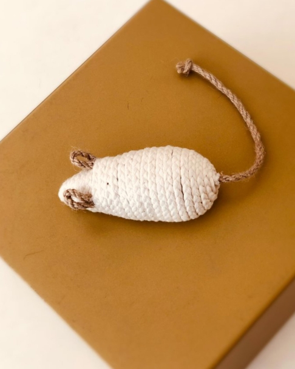
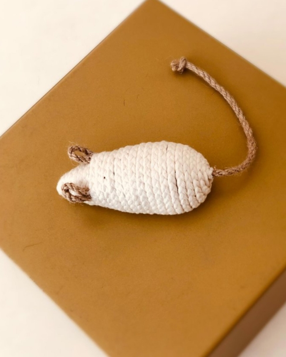
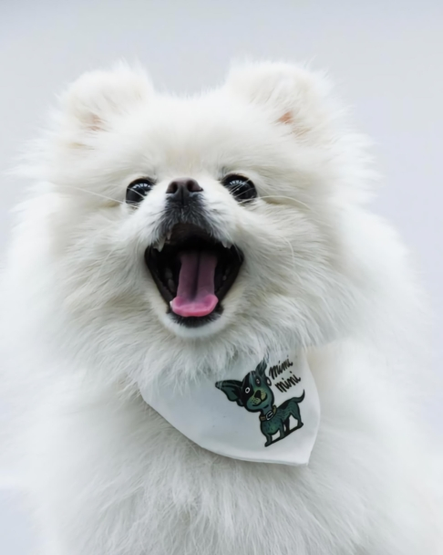
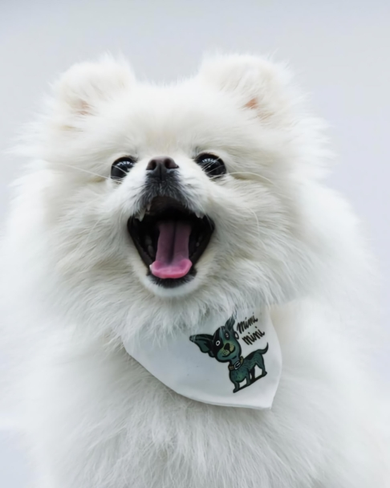

PET SO SHIC


펫 소 시크는 펫 업계에 새로운 패션과 품질의 기준이 되고자 합니다. 아름다우면서도 고품질의 제품을 만들기 위해 세계적인 명품 브랜드 출신의유명 아티스트들이 협력하고 있으며, 각 분야의 장인과 소통을 통해 최고의 품질과 가치를 전달하고, 최고의 스타일을 선물합니다.
반려동물을 사랑하는 파리지앵 Julien과 Raphaël은패션에 대한 남다른 열정으로 애견용품 사업에 뛰어들었습니다. 반려동물 업계에 새로운 패션의 기준이 되겠다는 결심으로2018년 프랑스 파리에서 시작하여 현재는 프랑스 대통령의 반려견이사용할 만큼 인정받는 프리미엄 브랜드로자리 잡게 되었습니다.


펫 소 시크의 모든 제품은 ‘삶 속의 예술(Art de vivre)’이라는 프랑스인들의 생활 철학을 담고 있습니다. 세계적인 명품 가죽 브랜드 H사 출신의 아티스트가 직접 디자인하고, 프랑스 수의사팀의 꼼꼼한 승인을 받아, 반려동물의 움직임과 특성을 고려한 설계로 우리 아이들에게 안전성과 편안함을 제공합니다.


 



 
